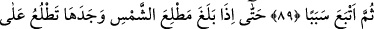
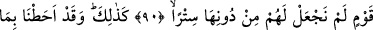
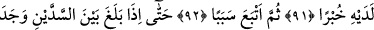
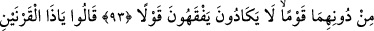
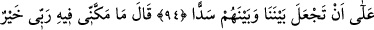
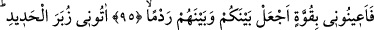
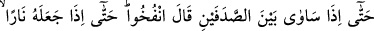
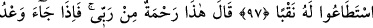
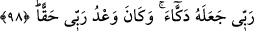

SİZ BANA
KUVVETİNİZLE DESTEK OLUN
BANA DEMİR KÜTLELER
GETİRİN
89. Sonra yine bir yol tuttu.
90. Nihâyet güneşin doğduğu yere ulaşınca, onu öyle bir kavim üzerine doğar
buldu ki, onlar için güneşe karşı bir örtü yapmamıştık.
91. İşte böylece onunla ilgili her şeyden haberdardık.
92. Sonra yine bir yol tuttu.
93. Nihâyet iki dağ arasına ulaştığında onların önünde, hemen hiçbir sözü
anlamayan bir kavim buldu.
94. Dediler ki: “Ey Zülkarneyn! Bu memlekette Ye’cûc ve Me’cûc bozgunculuk
yapmaktadırlar. Bizimle onlar arasında bir sed yapman için sana bir vergi verelim
mi?”
95. Dedi ki: “Rabbimin beni içinde bulundurduğu nimet ve kudret daha hayırlıdır.
Siz bana kuvvetinizle destek olun da, sizinle onlar arasına aşılmaz bir engel
yapayım.”
96. “Bana, demir kütleleri getirin.” Nihâyet dağın iki yanı arasını aynı seviyeye
getirince (vadiyi doldurunca): “Üfleyin (körükleyin)!” dedi. Artık onu kor haline